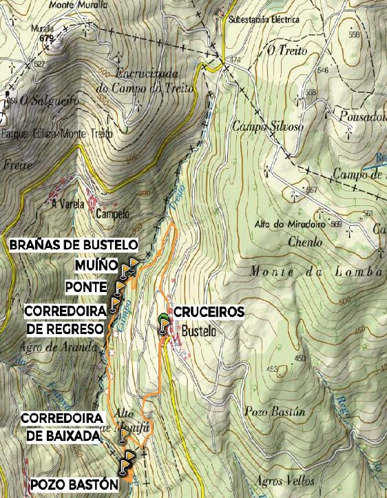
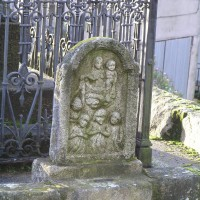
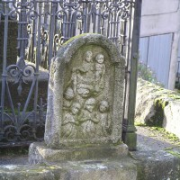
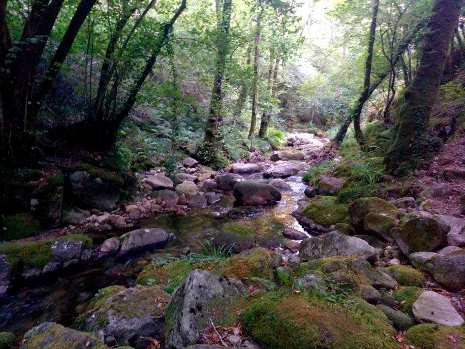
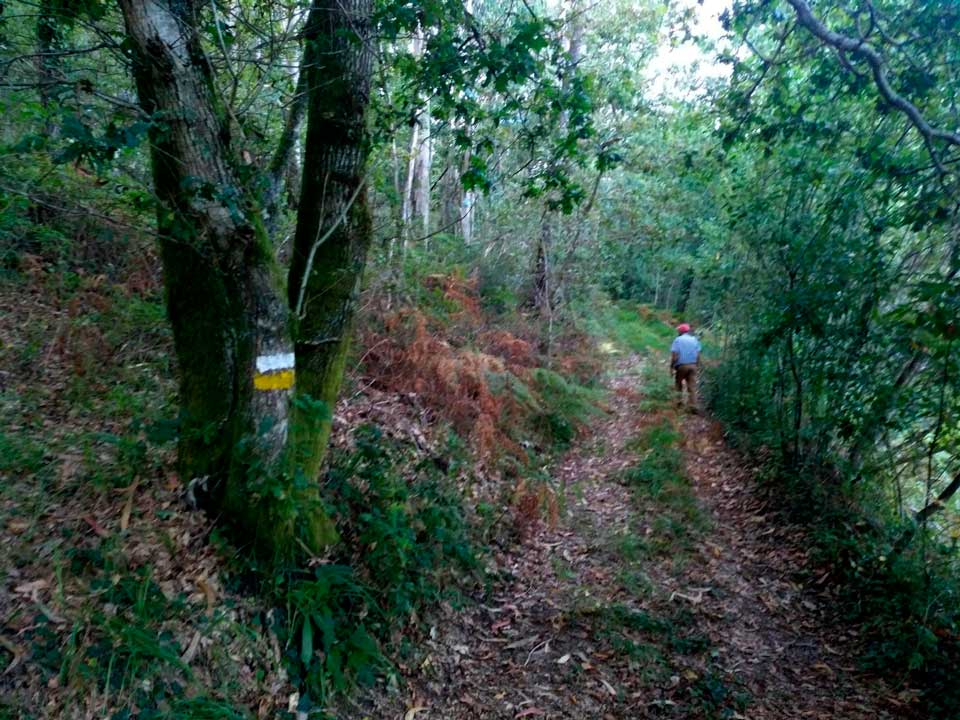
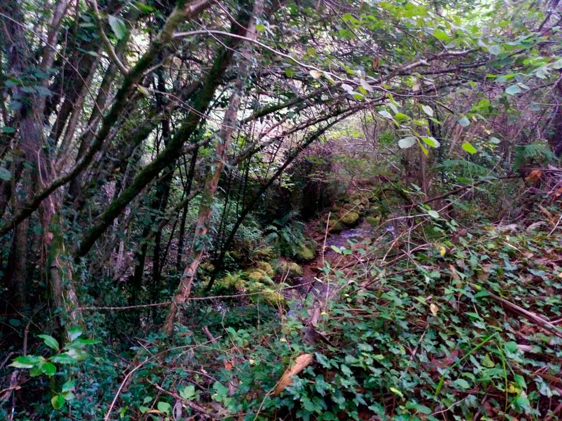
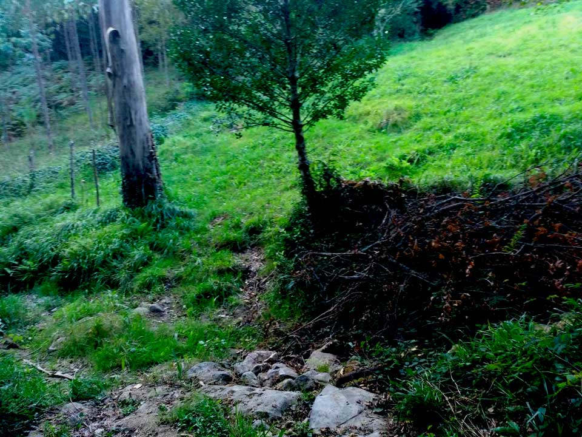

Ruta que percorre Bustelo, dando a coñecer a riqueza paisaxística e patrimonial da aldea de maior altitude do Concello de Dodro e tamén a que se atopa máis afastada do seu núcleo.
| Inicio | Cruceiro de Alfredo |
| Fin | Cruceiro de Alfredo |
| Distancia | 3,8 Km |
| Tipo | Circular |
| Duración | 1 h 30 min |
| Dificultade | Media-baixa |

Cruceiro de Alfredo
“Orixinariamente Bustelo pertenceu ao Concello de Rianxo. No pasado cando alguén morría nesta aldea baixábase o seu cadáver ao lombo, cunha esqueira e entre catro persoas, polo monte do Treito ata igrexa do Araño (Rianxo). Empregábase o sendeiro chamado “Camiño dos Mortos”e era preciso cruzar o río do Treito ou río de Bouzas, case á altura do Pozo Bastón. Un ano de moita enchente non se logrou atravesar esta canle e houbo que enterrar as ás/aos falecidas/os en San Xoán de Laíño, dende entón Bustelo comezou a formar parte do Concello de Dodro.O Cruceiro de Alfredo atópase no medio da aldea, á beira do antigo Camiño dos Mortos. Era costume parar ao seu pé co cadaleito e rezar unha oración pola persoa morta antes de acompañala na súa última viaxe.” “ Foi restaurado hai pouco, está composto por un fuste de sección circular, un capitel decorado con follas de acanto e cruz latina de sección octogonal. Debido á concentración parcelaria quedou dentro dunha propiedade privada.”

Cruceiro e peto de ánimas de Bustelo
“No mesmo núcleo de poboación, moi próximo ao anterior, localízase o Cruceiro de Bustelo do Monte, feito polo Vello Santeiro de Chave (Lousame), Andrés Castaño, no ano 1893. Sete emigrantes que marcharon a Cuba prometeron que se as cousas lle ían ben mandarían facer un cruceiro na aldea. Os doantes figuran na inscrición, aínda que non viron nunca a obra rematada porque non regresaron. Pagáronselle ao autor dezaseis onzas de ouro e tróuxose desde Noia en dous carros de bois. Ten na base un peto cun retablo no que se representa á Virxe do Carme coas ánimas do purgatorio. ” “Ao pé del enterrábanse os recén nacidos que morrían antes de serén bautizados, práctica que se deu a carón de moitos cruceiros de Galicia.”
 


Corredoira Tradicional de Bustelo cara á Ferreiría do Araño
“Saíndo de Bustelo camiñamos por unha corredoira tradicional en dirección á aldea da Ferreiría, sita en Araño (Rianxo). As súas pedras debuxan un camiño que semella trasladarnos a tempos pretéritos.” “Etimolóxicamente a palabra corredoira vén do latín vulgar “vía curritoria” de “currere”, correr, pasar. A corredoira é un camiño de carro que comunica as aldeas coas herdades que as rodean.”

Río Té
“ Os 12 km de lonxitude do seu leito transcorren por terras rianxeiras agás nun pequeno treito, onde o río baña as terras de Dodro. Ten tres pequenos afluentes, o rego do Batán, o rego do Muíño ou do Conde, pola marxe dereita, e o rego da Devesa, pola esquerda. Finalmente desemboca na praia da Torre, ao pé do Castelo da Lúa, do trobador e almirante Paio Gómez Chariño, primeiro señor de Rianxo e seguramente de Laíño.” “O sendeiro descende ata o curso do río Té. As súas augas nacen entre as rochas do monte Muralla, a case 500 m de altitude, no municipio de Rianxo, preto do seu límite con Lousame”.
Pozo Bastón no río Té
“Este espazo é coñecido como Pozo Bastón e localízase entre os concellos de Dodro e Rianxo, arriba da Ferreiría e abaixo de Bustelo. Hai persoas que din que é de Dodro e nalgunhas edicións do topográfico aparece situado neste municipio. Desta lugar cóntase a seguinte lenda: un mouro achegouse a un mozo do Araño que facía o servizo militar en África e preguntoulle de onde era. Este respondeu que do Araño, entón o mouro díxolle se sabía onde quedaba o Pozo Bastón; o mozo contestoulle que si e o mouro faloulle: —No Pozo Bastón están enfeitizadas tres das miñas fillas, se me fixeses o favor de ir alí e facer o que che diga daríache o que me pedises. O rapaz estivo de acordo, entón o mouro doulle tres bolos de pan e explicoulle o que tiña que facer, mais, insistíu:: —Non perdas este pan, non contes nada disto a ninguén e, sobre todo, tes que chegar ao pozo sen que lles falte ningunha frangulla. Cando o mozo regresou ao Araño pasou pola casa e pousou un pano co pan enriba da mesa da cociña. A muller, curiosa, quixo ver que había naquel envolto, destapouno e levou á boca un anaco dos bolos. O mozo rifoulle moito pero xa non había remedio. Colleu cara o Pozo Bastón e ao chegar, tal e como lle dixera o mouro, botou á auga un dos bolos. De contado viu saír a unha moza dunha fermosura nunca antes vista por el. Logo tirou o segundo, e emerxeu outra moza tan bonita como a primeira. Faltaba o terceiro dos bolos, o comido pola muller. Lanzouno e observou como unha terceira rapaza tentaba fuxir da auga, tamén moi fermosa, mais coxa. Esta como non podía saír do pozo agarrouse ás súas irmás e as tres voltaron para a fervenza, onde estarán aínda. Outra lenda recollida en Asados por Mar Llinares (Os Mouros no imaxinario popular) di que no Pozo Bastón afogaban os mozos que alí se bañaban enfeitizados por unha serea que peiteaba os seus cabelos dourados cun peite de prata. ” “Seguindo o itinerario, o río Té sorpréndenos cunha pequena fervenza que forma un estanque natural, onde é posible darse un baño.”

Río Treito e brañas de Bustelo
“
Á beira do rego do Treito, afluente do río Té, deixamos unha ponte e un muíño derruídos. As terras de Bustelo están bañadas polo rego de Pena e polo rego do Treito, tamén coñecido nun tramo como, río de Bouzas, e noutro como, río dos Muíños, pola abundancia destes. Esta auga é o mellor alimento das Brañas de Bustelo, terras húmidas que manteñen unha temperatura constante durante todo o ano, abastecendo ao gando de pastos. ”.
“Logo de ver a fervenza do Pozo Bastón tomamos a senda PRG- 15, “Subida ao Monte da Muralla” que comunica a aldea da Ermida (Rianxo) co Pico da Muralla (679 m). Aproveitando esta ruta voltamos cara a aldea de Bustelo por outro camiño tradicional. ”

 